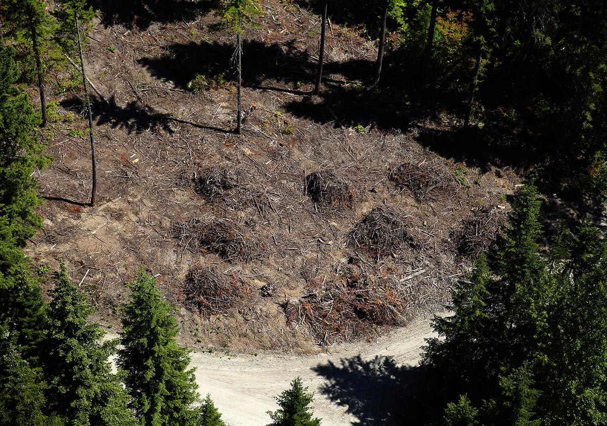
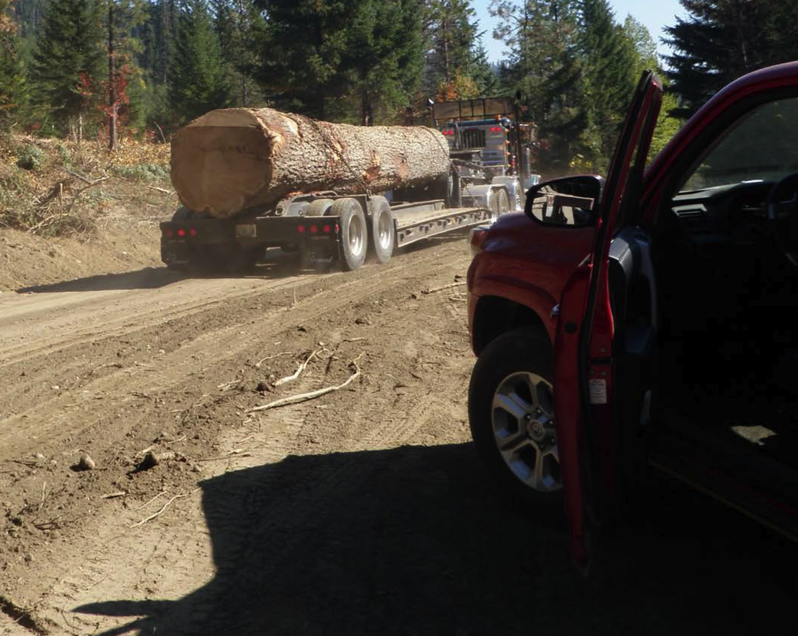
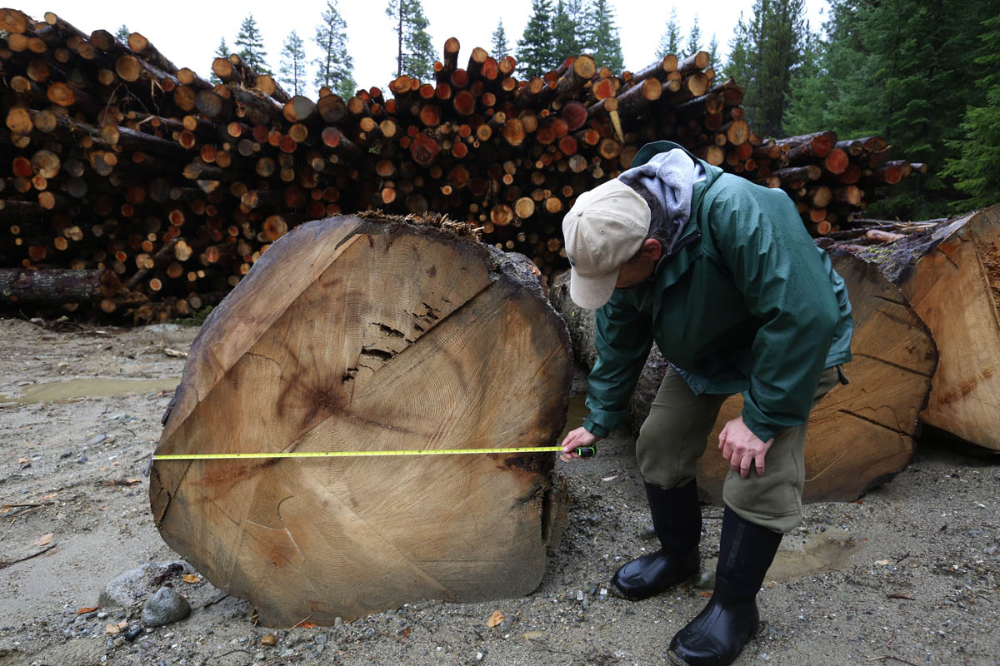
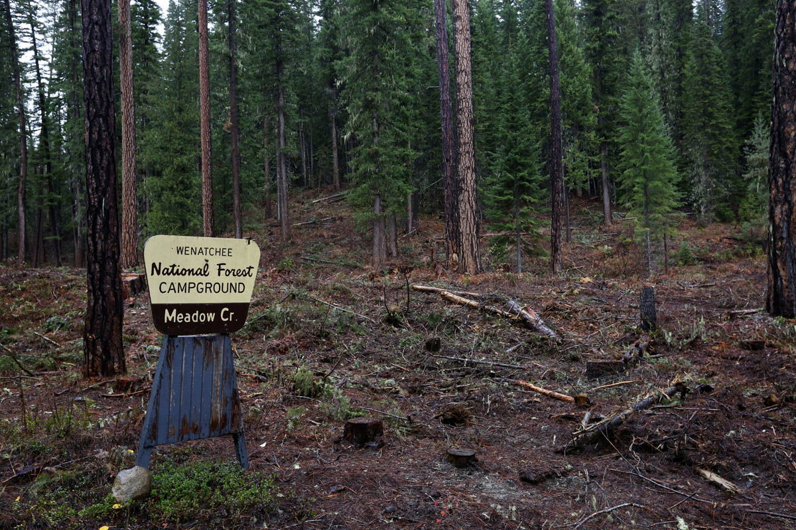

<%= t.process(markdown.intro) %>

Ken Lambert / The Seattle Times
Aerial view of the fire line area near Meadow Creek campsite, taken on Wednesday, June 29, 2016, near Leavenworth. Slash piles are seen at roundabout where Meadow Creek Rd. (lower left) intersects with NF-6306 (upper right).
<%= t.process(markdown.story1) %>

Ken Lambert / The Seattle Times
A pile of timber taken from the cut, near Leavenworth.
<%= t.process(markdown.story2) %>


US Forest Service, Ken Lambert / The Seattle Times
Loggers were supposed to leave trees larger than 20 inches when they cut a fire line into the woods near Leavenworth. But many much larger trees were felled. Rich Haydon, a former Forest Service employee, measures one such giant.
<%= t.process(markdown.story3) %>
Animal habitat damage by the numbers
Due to the emergency status of the cut, and the haste with which it was conducted, acres of animal habitat were destroyed, including trees and nesting grounds for the spotted owl.
- 6,658 acres Size of a typical owl home range in the Eastern Cascades (roughly a circle with a 1.8-mile radius)
- 46% Portion of the Chiwawa reserve that's considered "suitable" for owls, according to a 1997 assessment
- 237 acres Amount of forest cut for the Wolverine fire line
- 114 acres Amount of the cut that crossed through owl habitat (roughly 48%)
<%= t.process(markdown.story4) %>


Ken Lambert / The Seattle Times
Photos of the cut near Leavenworth. A big ponderosa survived fire in the past, but it was no match for loggers. Fire resistant species such as ponderosa were supposed to be protected.
<%= t.process(markdown.story5) %>
As a part of the fire planning effort, the government models the likelihood that the fire will spread beyond a certain point using software called FSPro. The map shown displays the bounds of the fire in dark orange, and the fire line is shown in black.
Modeling on Aug. 27 predicted a high probability that the fire would head south, possibly threatening Plain, Ardenvoir and areas nearby. The fire line was planned accordingly and work began three days later.
Quickly, however, it became clear that the fire was not likely to spread. The weather was rainy and cool. A model run on Sept. 5 put the odds of the fire's spread beyond the line at less than 1%.
Loggers continued cutting down trees for nine more days. The markers shown here are places where repairs would be needed to correct the environmental damage to fish and owl habitat.
<%= t.process(markdown.story6) %>